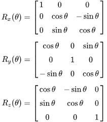

Kuka robots, used in automotive manufacturing and material handling, benefit from this extension, improving their operational reach. A 7th degree of freedom enhances a 6-DOF robot's functionality so it is considerably extending the workspace of the robot.
Revolute Joint: Allows rotational movement around a single axis.It is analogous to a hinge that allows parts to rotate.
Link: A rigid component that connects two joints.In a KUKA robot, links vary in length and are designed to provide the necessary reach and flexibility.
End-Effector: The tool or device attached to the end of the robot arm that interacts with the environment.
Base: The fixed part of the robot that supports the entire structure and serves as the reference point for all robot movements.
Manipulator: The combination of joints and links that forms the robot arm. The manipulator is responsible for positioning the end-effector in the desired location and orientation.
Actuator: A device that produces movement in the joints.
Controller: The computer system that manages the robot's movements.
For a 7-DOF KUKA robot, the rotation matrix is a key component of the transformation matrix that describes the orientation of the end-effector with respect to the base frame.
The combination of rotary and articulated joints corresponds to the ball and socket joint of a human shoulder. Since the arm has one more degree of freedom than necessary, there are several possibilities or solutions for gripping or hitting an object. If there are no obstacles in the working area, the solution that requires the least distance to be travelled is chosen. This additional degree of freedom, represented by the redundancy circle, makes it possible, for example, to avoid obstacles or even to perform a zero space movement with unchanged tool position and direction
Some of the applications of 7 DOF Kuka robot are:
Automotive Manufacturing: Robots can pick parts from a conveyor belt and place them onto a vehicle assembly line, such as installing components in the car chassis.
Welding: Handling and positioning parts for precision welding tasks, ensuring consistent and high-quality welds.
PCB Assembly: Picking electronic components and placing them onto printed circuit boards (PCBs) with high precision.
Lab Automation: Handling test tubes, vials, and other lab equipment for automated testing and analysis processes in pharmaceutical research and development.
Vending Machines: Robots can restock vending machines by picking and placing items accurately, ensuring they are always stocked.
Inverse kinematics (IK) for a 7-degree-of-freedom (DOF) robot like the KUKA robotic arm involves determining the joint angles required to achieve a desired end-effector position and orientation in space. For a pick and place operation, the inverse kinematics solution ensures that the robot's end-effector reaches specific target points with a defined orientation, usually to grasp and move object accurately.
The basis for the calculation of the inverse kinematics are the DH parameters.
The final transformation matrix is: